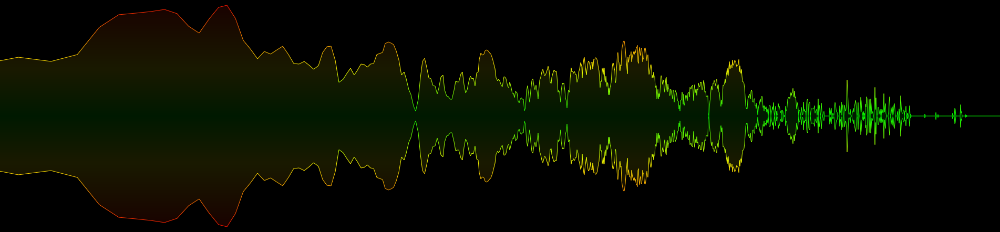

audioMotion-analyzer demos
Fluid layout demo
- Illustrates usage of audioMotion-analyzer in a fluid layout context - resize the window and see how the analyzer adjusts itself;
- Load an audio file from your computer, or a remote file or stream via URL;
- Play test tones, generated by additional frequency oscillator and volume gain nodes connected to the analyzer;
- The
onCanvasDraw callback is used to draw the audioMotion logo on the canvas, pulsating to the beat of the music;
- Experiment with
reflex settings, introduced in v2.1.0

▶ VIEW DEMO
Multiple instances demo
This demo shows three analyzer instances that share the same audio element and context, but each with its own configuration and visualization options.

▶ VIEW DEMO
Note: demo scripts are bundled/compressed with webpack.
The source code is in the project's src/ folder.